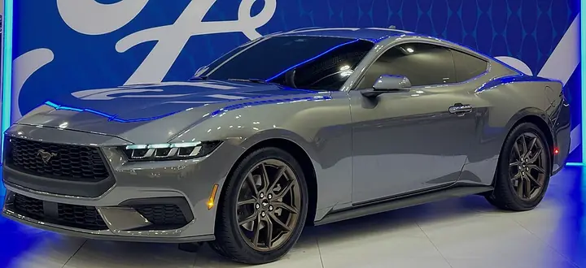
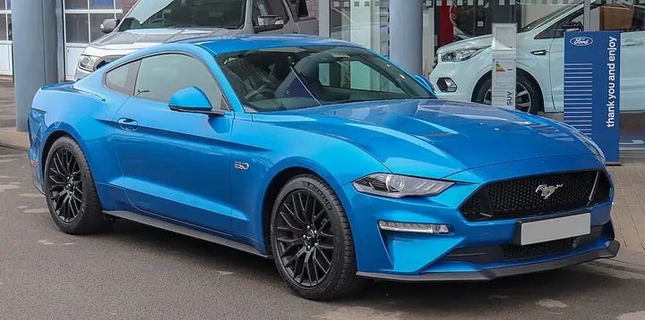
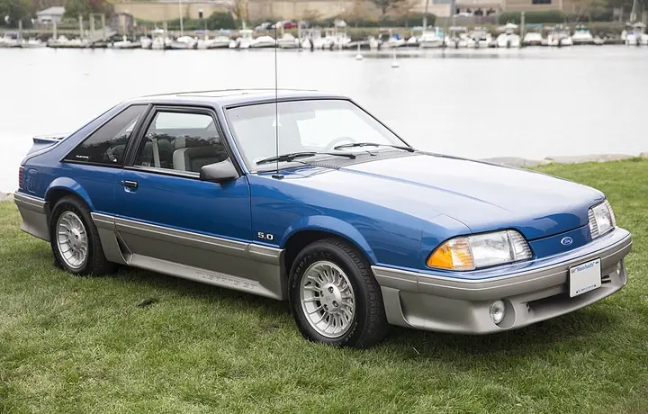
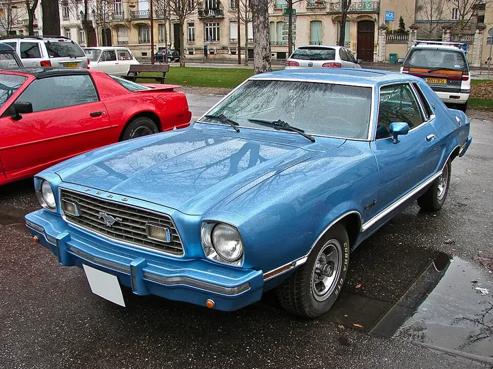

Ford Mustang
Seventh generation (S650; 2024) · 2023–present
Abstract
This generation of the Ford Mustang is a pony car (D), built May 2023 – present in United States: Flat Rock, Michigan (Flat Rock Assembly Plant), Canada: Markham, Ontario (Multimatic). Body styles: 2-door coupe, 2-door convertible. Layout: Front-engine, rear-wheel-drive. Designed by Chris Stevens. This generation has its own article: Ford Mustang (seventh generation).

.jpg){kind=link}
1Specifications
| Production | May 2023 – present |
|---|---|
| Model years | 2024–present |
| Assembly | United States: Flat Rock, Michigan (Flat Rock Assembly Plant)Canada: Markham, Ontario (Multimatic) |
| Designer | Chris Stevens |
| Class | Pony car (D)Muscle car (S) (EcoBoost, GT, and Dark Horse)Sports car (S) (GTD) |
| Body style | 2-door coupe2-door convertible |
| Layout | Front-engine, rear-wheel-drive |
| Platform | Ford D2C platform |
| Engine | Gasoline:2.3 L EcoBoost I45.0 L Coyote V85.2 L Predator supercharged V8 (GTD) |
| Transmission | 10-speed 10R80 automatic6-speed Getrag MT82-D4 manual (GT)6-speed TREMEC TR-3160 manual (Dark Horse)7-speed Tremec dual-clutch (Dark Horse SC)8-speed Tremec dual-clutch (GTD) |
| Wheelbase | 107.1 in |
| Length | Standard: 4810 mmDark Horse: 4820 mm |
| Width | Standard: 1915 mmDark Horse: 1920 mm |
| Height | Standard: 1395–1400 mmDark Horse: 1400 mm |
| Weight | 3588–3741 lb (EcoBoost)3827–4012 lb (GT)3949–3993 lb (Dark Horse) |
| Predecessor | Ford Mustang (sixth generation) |
2Versions
- Mustang Dark Horse S
- Mustang GTD
- Mustang GTD Competition
- Mustang Dark Horse SC
- Mustang Dark Horse T8-Spec Pack
- Use as police vehicle
3Previous generations








.jpg){kind=link}


4Generation by generation
Length +8% from the first to the last
1974 19734,445 mm
1979 19784,562 mm
SN95 19934,610 mm
S550 20144,788 mm
Mustang Mach-E 20204,739 mm
S650 20234,810 mm
Weight +38% from the first to the last
1979 19781,183 kg
S550 20141,583 kg
Mustang Mach-E 20201,993 kg
S650 20231,627 kg